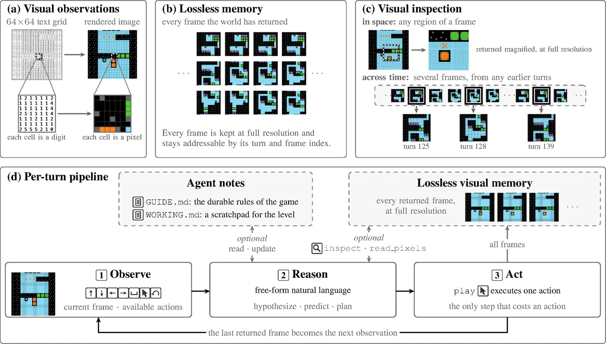
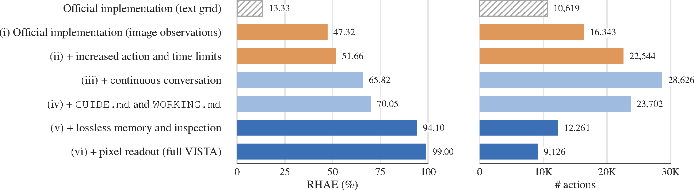

Models that act: over tools, over computers, over long horizons.
1 papers
Written by Junkun Yuan.
Click here to go back to main contents.
Table of contents ▶
Papers are displayed in reverse chronological order. High-impact or inspiring works are highlighted in red.
VISTA: A Visual Harness for Reasoning in an Interactive World
MIT
arXiv, 2026
Oct 01, 2026 VISTA (5) code (249)
Lossless visual memory plus model-directed inspection turn a multimodal model into an agent that clears all 25 public ARC-AGI-3 games.
Insight. Encode-once perception caps an agent: keep raw pixels addressable and let the model re-attend on demand, spend the context on reasoning rather than observation, and ablate the harness as you would an architecture — the gap it closes, 13 to 99 RHAE, exceeds a model generation.

Visual observation (§3.1, Fig. 3a). A 512×512 PNG (the 64×64 grid upscaled 8×) costs ~308 image tokens; the text grid costs ~4K. Images alone lift the official harness 13.33 → 47.32 RHAE (Fig. 5 i); in full VISTA, grids reach 96.75 to images' 99.00 at 2.3× the tokens (Fig. 6).
Lossless visual memory (§3.1, Fig. 3b). Every returned frame, animation frames included, is archived in its original form, indexed by turn and frame and addressable after any compaction. Only an action's final frame enters context; the official protocol pushes up to seven.
Visual inspection (§3.1, Fig. 3c). inspect(question, views) returns any region of any archived frame, enlarged (≈13× in Fig. 10b), or several frames from earlier turns to compare or replay. With the memory it lifts the notes-only harness 70.05 → 94.10 (Fig. 5 v).
Pixel readout (A.4). read_pixels splits a region into rows × columns cells and returns the palette and one value per cell, where a judgment hinges on exact color. It completes VISTA, 94.10 → 99.00 (Fig. 5 vi); dropping both tools sends GLM-5.3 Flash 66.93 → 13.27 (Fig. 8).
Two notes (§3.2, A.2). GUIDE.md keeps the game's durable rules across levels; WORKING.md is a scratchpad for the current level, surviving RESETs and context restarts, cleared when the level advances. They lift the continuous-conversation harness 65.82 → 70.05 (Fig. 5 iv).
Per-turn pipeline (§3.2, Fig. 3d). Observe the frame and available actions; reason in free-form language, predicting the outcome before play and listing changes after; inspect or update notes freely; play one action, the only step that costs one. Nothing in the harness is trained.
Context compaction (§3.2, A.4). One conversation per game, many play calls per context, not one per request (51.66 → 65.82, Fig. 5 iii). Near the limit all tools are blocked until the agent saves a handoff; a fresh context opens with both notes, the action log and last frame.

Experiments (§4–5). RHAE over the 25 public ARC-AGI-3 games: Claude Opus 5.0 hits 100.00 in 7,302 actions to humans' 17,135, GPT-5.6 Sol 99.00; the official harness gets them 40.68 and 13.33, and every rival above 95 writes programs. With GPT-5.6 Sol it beats the official agent on GameWorld, AI GameStore and BabyVision (63.3 vs 40.0 success, 140.3 vs 47.3 at human median 100, 63.2 vs 41.0 accuracy).
More context and more pixels both hurt. A 780K context scores 93.9 at 105.7M tokens per game against 99.0 at 200K; 100K keeps 98.6 at 17.3M; a 16× image (1,229 tokens a frame) drops to 88.3 where 4× (77 tokens) reaches 99.7 (Fig. 7): the tokens fill context, not reasoning.
The model sets a ceiling the harness cannot lift. Open-weight GLM-5.3 Flash 320B climbs 1.89 → 66.93; 3D renderings cost 84.12 RHAE at 2.3× the actions (20,640, Fig. 9); and §6 concedes the public games may sit in the training data, so the private set is the real test.
The per-turn loop and the visual tools. Follow Figure 3d and the tool interface of Appendix A.4.
def run_game():
# 1. Reset the game, archive its first frames and render the observation
frames, actions, done = env.reset() # ARC-AGI-3 returns 64x64 palette grids
memory = {(0, f): img for f, img in enumerate(frames)} # lossless visual memory, keyed by (turn, frame)
history, guide, working, turn = [], "", "", 0 # action log, GUIDE.md, WORKING.md
context = [prompt, render(frames[-1]), actions] # 8x nearest-neighbor upscaling to 512x512; release default 16x
while not done and len(history) < 2000: # 2,000 actions per game; official: 5x human and 12 h
# 2. The model reasons in free-form text and emits one tool call
call = model(context)
# 3. Free tools read the memory, the notes or the action log; nothing is spent
if call.tool == "inspect":
context += inspect(memory, call.views)
elif call.tool == "read_pixels":
context += read_pixels(memory, call.views)
elif call.tool == "history":
context += [history[call.start:call.end]]
elif call.tool in ("read_guide", "read_working"):
context += [guide if call.tool == "read_guide" else working]
elif call.tool == "write_guide":
guide = call.content # durable rules, kept across levels and sessions
elif call.tool == "write_working":
working = call.content # scratchpad for the level; kept across RESETs, cleared when the level advances
# 4. play, the only call that costs an action: every returned frame is archived, the last one is observed
elif call.tool == "play":
turn += 1
frames, actions, done = env.step(call.action, call.x, call.y) # RESET, ACTION1-7; ACTION6 clicks (x, y)
memory.update({(turn, f): img for f, img in enumerate(frames)})
history.append((call.action, len(frames)))
context += [render(frames[-1]), len(frames), actions]
# 5. Near the context limit, block every tool until the agent saves a handoff, then restart the context
if tokens(context) > 200_000: # 100K: -0.4 RHAE at half the tokens; 780K: -5.1 at 3.4x
guide, working = model.save_compact_checkpoint(guide, working)
context = [prompt, guide, working, history, render(frames[-1])] # the memory stays addressable
def inspect(memory, views, display=512):
# view = {label, turn, frame=final, region=full}; region = {x, y, w, h} in display coordinates
out = []
for v in views[:16]: # at most 16 views per call
crop = memory[(v.turn, v.frame)].crop(v.region)
scale = display / max(crop.w, crop.h) # enlarged to fit the display, no smoothing
out.append(crop.resize((crop.w * scale, crop.h * scale), nearest))
return out
def read_pixels(memory, views):
# view adds rows and columns; the region is split into equal cells and each cell's center pixel is read
out = []
for v in views[:64]: # at most 64 views and 4,096 samples per call
crop = memory[(v.turn, v.frame)].crop(v.region)
ys = [crop.h * (r + 0.5) / v.rows for r in range(v.rows)]
xs = [crop.w * (c + 0.5) / v.cols for c in range(v.cols)]
out.append([[palette.index(crop[y, x]) for x in xs] for y in ys]) # one color symbol per cell
return palette, outLast updated on October 06, 2026 · Citations from Semantic Scholar & Google Scholar; stars from GitHub, October 2026